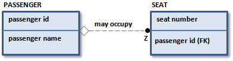
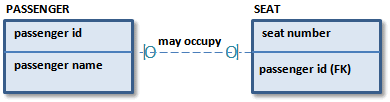

Nonidentifying relationships contribute keys from a parent to a child entity. However, by definition, some (or all) of the keys do not become part of the key of the child. This means that the child is not identification-dependent on the parent. There can also be situations where an entity at the many end of the relationship can exist without a parent, or existence-dependent.
If the relationship is mandatory from the perspective of the child, then the child is existence-dependent on the parent. If it is optional, the child is neither existence or identification-dependent with respect to that relationship (although it may be dependent in other relationships). To indicate the optional case, IDEF1X includes a diamond at the parent end of the relationship line and IE includes a circle.


In the preceding examples, the attribute �passenger id� is a foreign key attribute of SEAT. Because the �passenger id� does not identify the SEAT but identifies the PASSENGER occupying the SEAT, the business has determined that the relationship is nonidentifying. The business has also stated that the SEAT can exist without any PASSENGER, so the relationship is optional. When a relationship is optional, the diagram includes either a diamond in IDEF1X, or a circle in IE notation. Otherwise, the cardinality graphics for nonidentifying relationships are the same as for identifying relationships.
The cardinality for the relationship is indicated with a Z in IDEF1X and a single line in IE. The cardinality states that a PASSENGER <may occupy> zero or one of these SEATs on a flight. Each SEAT can be occupied, in which case the PASSENGER occupying the seat is identified using �passenger id.� It can also be unoccupied, in which case the �passenger id� attribute is empty (NULL).